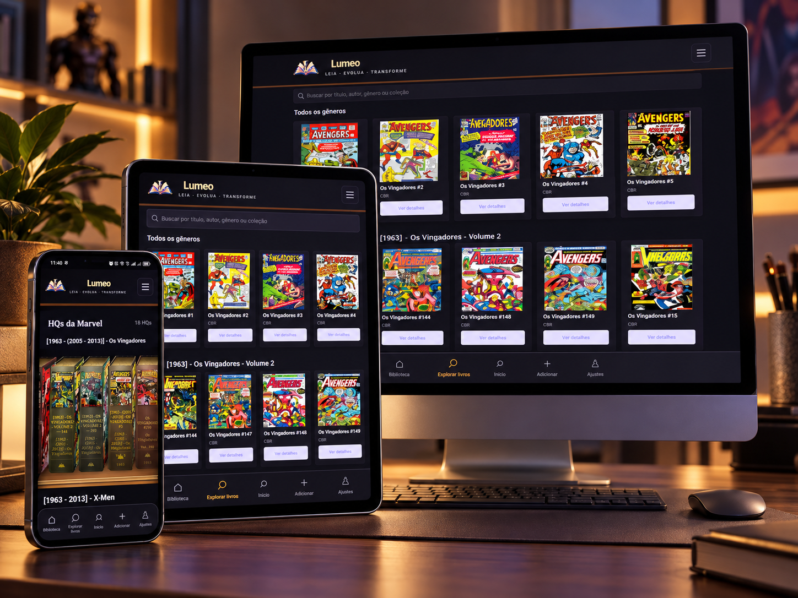

Reconstituição ilustrativa de comentário relatado
BALÕES MAIS LEGÍVEIS. UMA BIBLIOTECA QUE GANHA VIDA.
Uma experiência visual para enxergar cada detalhe e deixar a coleção mais próxima.
Lumeo HQs
ACESSO AO LUMEO · R$ 29,90
Quadrinhos, mangás e coleções merecem mais do que arquivos jogados em pastas. No Lumeo, cada página ganha mais presença, ritmo e imersão.
Balões, quadros e ação do jeito que suas histórias merecem.
R$ 29,90 · Confira as condições de acesso no checkout.
EXPERIÊNCIAS COM O LUMEO
Balões ampliados para facilitar a leitura. Estantes que ganham vida. Conheça os recursos que chamaram a atenção de quem experimentou o Lumeo.
Reconstituição ilustrativa de comentário relatado
Uma experiência visual para enxergar cada detalhe e deixar a coleção mais próxima.
Reconstituição ilustrativa de comentário relatado
O balão ampliado ajuda a acompanhar o diálogo sem perder a arte da página.
Um lugar para a sua coleção
O Lumeo foi pensado para deixar sua coleção mais fácil de encontrar, retomar e apreciar em qualquer tela.
Leitura visual em qualquer tela
No Android, leia pelo celular ou tablet. No PC, continue pela versão web no navegador.

Feito para quem coleciona histórias
Encontre suas leituras sem procurar arquivo por arquivo.
Aproveite as páginas em uma experiência pensada para telas.
Retome seu progresso e volte para sua história no seu ritmo.
Bônus para completar sua biblioteca
Além dos quadrinhos compatíveis, o Lumeo também oferece espaço para livros e recursos de Pomodoro com metas de páginas ou tempo, pausas e lembretes no Android.
Acesso Lumeo
Organize sua coleção, abra uma HQ e volte direto para a aventura. O Lumeo foi feito para deixar a sua leitura visual mais perto de você.
Dúvidas frequentes
Sim. O Lumeo foi pensado para leitura no Android e também possui versão web para PC pelo navegador.
O Lumeo organiza conteúdos compatíveis em uma biblioteca; a disponibilidade depende das fontes e do acesso configurado no aplicativo.